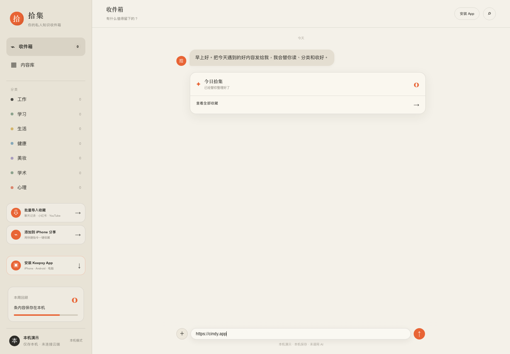
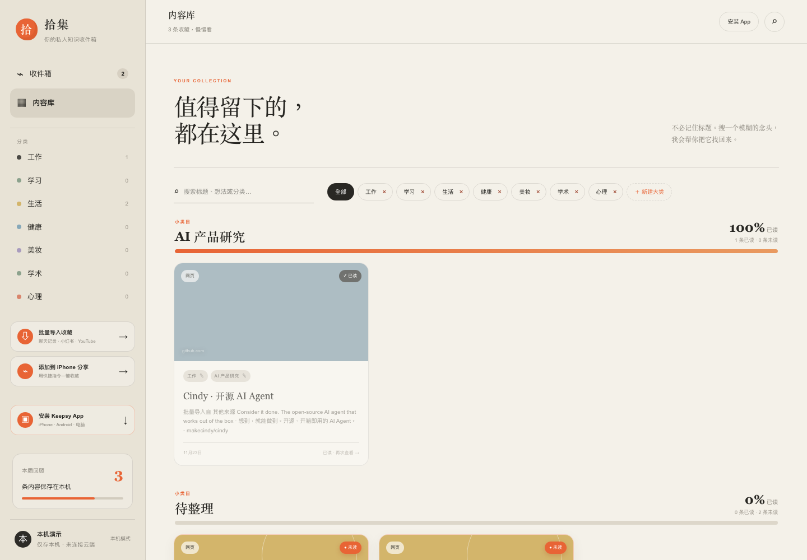
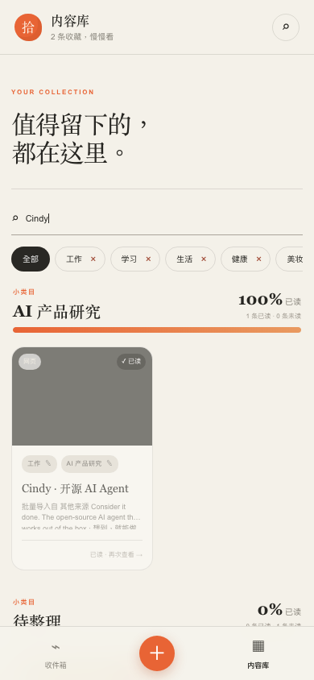

ACapture first, organize later
Start with a URL and bring scattered material into one library. This run saved the Cindy website, Julia’s Reels AI case study, and Cindy’s GitHub repository.


 中文
中文04 / INDEPENDENT PRODUCT
Connect a Chrome assistant, iPhone shortcuts, and the web to one AI knowledge inbox for capture, organization, storage, and reading.
Overview
The value of saved content goes beyond a link: it needs to be findable, readable, and reusable. Keepsy brings scattered entry points into one content workflow.
The Problem
Links are scattered across chats, browsers, and content platforms. Saving can lose context, create duplicates, and leave reading progress unclear. The product connects capture, organization, retrieval, and reading.
Interaction Workflow
Actual running UI, arranged in workflow order. Desktop and mobile viewport captures align at the top. Click to view full-size images.
Start with a URL and bring scattered material into one library. This run saved the Cindy website, Julia’s Reels AI case study, and Cindy’s GitHub repository.

Four pasted URL lines became three unique addresses. One was already saved, so two new items were added. Feedback distinguishes input count from newly saved items.

Categories support ongoing organization; keyword search supports immediate retrieval. Searching “Cindy” returned two saved items. Titles and categories remain editable when extraction is noisy.


Open extracted content inside the product while retaining the source link, editing, and read-state controls. The GitHub item was marked as read and its library state checked.


The System
OpenAI API integration summarizes and categorizes captured content to make it easier to retrieve and read. Source links and manual editing let users add context, correct categories, and manage reading progress.
Verified Outcomes
Reflection & Scope
Extraction can be noisy and classification can be wrong. Source access, editing, duplicate feedback, and reading state make the library usable over time.